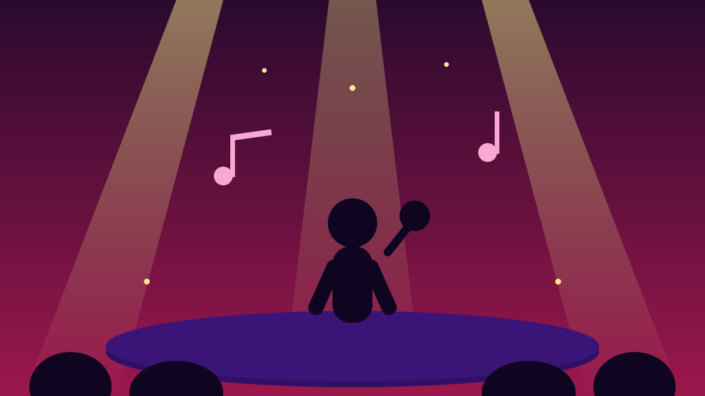

1 / 6

🎬 HIBURAN
Hari kedua = hari nostalgia nasional
Dari emo 2000-an sampai girl group legendaris, Synchronize Fest hari ini isinya reuni semua. Geser →
2 / 6
🎪
Festivalnya apa?
Synchronize Fest 2026 digelar 16–18 Oktober 2026 di Gambir Expo, JIExpo Kemayoran, Jakarta. Memasuki edisi ke-11, festival ini mengusung tema "It's Not Just a Festival, It's a Movement" dan menghadirkan lebih dari 100 musisi Indonesia selama tiga hari.
3 / 6
🖤
Emo Revival!
Buat anak 2000-an, ini puncaknya: Emo Revival menghadirkan Killing Me Inside Re, Alone At Last, Killed by Butterfly (era 2006), Side-B (era Thirteen 2009), Friends of Mine, dan The Side Project. Siap-siap sing-along sambil nostalgia masa warnet.
4 / 6
💃
Indonesian Girl Group
Pertunjukan spesial ini mempertemukan Chibi Chibi, 7ICONS, Super Girlies, G String, dan Princess. Agatha Pricilla, Febby Rastanty, Ify Alyssa, dan Sivia turut terlibat, dengan musik digarap bersama Jebung.
5 / 6
😂
Tribute to Warkop DKI + bintang pop
Ada juga Tribute to Warkop DKI bareng Indro Warkop, GJLS, Duo Bahlul, dan Orkes Nunung CS. Panggung hari kedua turut diisi Bernadya, Hindia, Ayu Ting Ting, Rizky Febian & Mahalini, Wali, Souljah, Seringai, The Panturas, Float, dan Maliq & D'Essentials.
6 / 6
🤔
Efeknya ke lo apa?
Kalau lo nggak ke Kemayoran, siap-siap FYP penuh video reuni emo dan girl group malam ini. Ini juga bukti nyata: musik 2000-an bukan sekadar nostalgia — ia masih hidup dan masih punya penonton segenerasi penuh. Cek setlist-nya, siapa tahu lagu masa SMP lo ikut dibawain.